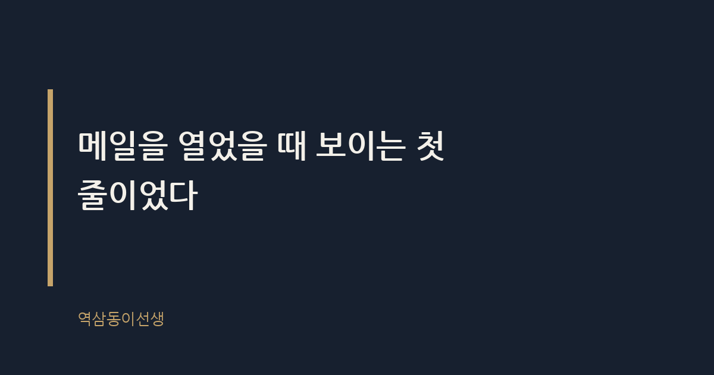
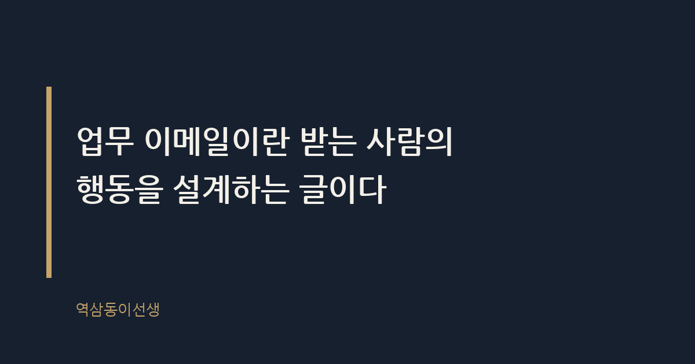

주제 업무 이메일, 첫 줄에 무엇을 써야 답장이 오는가 (evergreen / office)
제목 후보
메타 설명 업무 이메일 첫 줄에 무엇을 써야 답장이 오는지, 팀장으로 수백 통을 받아본 경험으로 알려준다.
라벨 업무이메일, 직장인이메일, 이메일작성법, 비즈니스메일, 회사생활팁, 직장인꿀팁, 메일작성요령, 이메일첫줄, 업무소통, 회사이메일예시, 보고메일작성법
실용 자산 예시 문장 모음 — 상황별로 '좋은 첫 줄'과 '피해야 할 첫 줄'을 대비시키면 바로 복사해 쓸 수 있어 검색 의도에 부합한다
발행 전 팩트체크
이미지 (Blogger 편집기에 드래그해 넣으세요)
도입부 사진 · ⓒ StockSnap / Pexels


월요일 오전, 메일함을 열면 안 읽은 메일이 마흔 통 넘게 쌓여 있다. 제목만 훑으며 스크롤을 내리다가 손이 멈추는 메일이 있고, 나머지는 '나중에'라는 이름의 무덤으로 간다. 그 차이를 만드는 건 제목이 아니었다. 메일을 열었을 때 맨 처음 보이는 한 줄이었다.
브랜드팀장으로 일할 때 같은 팀에 후배 둘이 있었다. 한 명은 메일을 열면 늘 "안녕하세요, 날씨가 많이 쌀쌀해졌습니다"로 시작했다. 다른 한 명은 "다음 주 화요일까지 시안 컨펌 부탁드립니다"로 시작했다. 둘 다 성실하고 일도 잘했지만, 답장 속도는 하늘과 땅 차이였다. 앞사람 메일은 읽다가 '그래서 용건이 뭐지' 하며 스크롤을 두 번 더 내려야 했다. 뒷사람 메일은 3초 만에 내가 무엇을 해야 하는지 알았다.
업무 이메일이란 보내는 사람의 사정을 전달하는 글이 아니라 받는 사람의 행동을 설계하는 글이다. 첫 줄에 상대가 지금 무엇을 해야 하는지, 언제까지인지가 보이면 답장이 온다. 반대로 첫 줄이 날씨 인사나 근황으로 시작하면, 읽는 사람은 본론을 찾아 헤매다 결국 메일을 닫고 '이따 다시'를 누른다.
내가 쓰던 방식은 단순했다. 메일 제목 아래 첫 줄에 결론부터 썼다. "2분기 예산안 검토 부탁드립니다", "오늘 3시 회의 10분 연기 가능할까요" 처럼. 인사말은 그다음 줄로 미뤘다. 처음엔 딱딱해 보일까 걱정했는데, 실제로는 반대였다. 바쁜 사람일수록 용건부터 말하는 메일을 더 반겼다.
이 방식을 팀 전체에 적용해 본 적이 있다. 팀 회의 때 "메일 쓸 때 첫 줄에 용건부터 쓰자"고 말로만 전달했더니 반영이 더뎠다. 그래서 내가 보낸 메일을 몇 개 캡처해 회의 자료로 띄웠다. 첫 줄과 용건 사이의 거리가 짧을수록 회신이 당일에 왔다는 걸 눈으로 보여주니, 그제야 다들 순서를 바꾸기 시작했다. 말보다 사례 하나가 더 빠르게 움직인다.
회사원의 메일함은 미술관이 아니라 분류창고에 가깝다. 큐레이터처럼 작품 하나하나를 음미하며 읽을 여유가 없다. 받는 사람은 메일 제목과 첫 줄, 길어야 두 줄을 보고 세 가지 중 하나를 결정한다. 지금 처리할 메일인지, 나중에 볼 메일인지, 아예 무시할 메일인지.
이 판단이 첫 줄에서 끝나는 이유는 메일함 자체가 우선순위 경쟁의 장이기 때문이다. 같은 시간에 수신함에 도착한 메일 열 통 중 즉시 답장을 받는 메일은 한두 통뿐이다. 나머지는 밀려난다. 임원 비서로 오래 일한 지인이 해준 말이 있다. "임원들은 메일을 안 읽는 게 아니라, 못 읽는 거예요. 첫 줄에서 결론이 안 보이면 다음 메일로 넘어갑니다." 이건 게으름의 문제가 아니라 구조의 문제다.
그래서 첫 줄에 용건을 담지 않은 메일은 아무리 공들여 썼어도 읽는 사람 입장에서는 '해독이 필요한 메일'이 된다. 해독에는 품을 들여야 하고, 품을 들이기 싫은 메일은 뒤로 밀린다. 첫 줄이 승부처인 이유는 바로 여기에 있다.
메일을 쓰기 시작할 때 손가락이 먼저 움직이면 결국 인사말부터 나온다. 타이핑하기 전에 머릿속으로 짧게 점검하는 순서가 있으면 첫 줄이 저절로 달라진다.
이 세 질문을 거치면 "다름이 아니라 여쭤볼 게 있어서"라는 문장이 나올 자리가 없어진다. 용건과 기한이 이미 머릿속에 정리돼 있는데 굳이 에둘러 쓸 이유가 없기 때문이다.
상황별로 첫 줄을 어떻게 바꿔야 하는지 정리했다. 그대로 가져다 써도 된다.
여기서 오해하는 사람이 많다. 인사말을 없애라는 게 아니라 순서를 바꾸라는 뜻이다. 상대가 부서장이거나 외부 거래처 임원이라면 정중한 인사가 필요한 경우도 분명 있다. 다만 그 경우에도 용건은 두 번째 줄을 넘기지 않는다. 인사 한 줄, 용건 한 줄, 그다음에 배경 설명이 오는 순서가 가장 안전하다.
신입사원 시절 나도 메일 서두에 안부부터 길게 썼다. 상사가 "용건이 뭔데?"라고 되물은 적이 두 번 있고 나서야 순서를 바꿨다. 그 뒤로 메일 작성 시간이 오히려 줄었다. 용건부터 쓰면 군더더기를 덜어내는 게 눈에 보이기 때문이다.
외부 거래처와 첫 메일을 주고받을 때는 예외를 둔다. 서로 안면이 없는 사이라면 짧은 인사 한 줄이 관계의 온도를 만든다. 다만 그 인사가 세 줄, 네 줄로 늘어지면 안 된다. "안녕하세요, OOO팀 △△△입니다. 다름이 아니라 아래 건으로 연락드립니다"까지가 적당하다. 그다음 줄부터는 바로 용건이어야 한다.
요즘은 메일을 PC가 아니라 지하철 안에서, 엘리베이터를 기다리며 스마트폰으로 먼저 확인하는 경우가 많다. 화면이 작으면 미리보기에 노출되는 글자 수도 줄어든다. 인사말이 길면 그 미리보기 영역이 통째로 안부 인사로 채워지고, 정작 용건은 '더 보기'를 눌러야 나온다.
모바일 환경을 고려한다는 말은 메일을 짧게 쓰라는 뜻이 아니라 중요한 말을 앞으로 당기라는 뜻이다. 첫 줄에 용건이 있으면 미리보기만 보고도 상대는 메일함을 넘기면서 판단을 내릴 수 있다. 반대로 "다름이 아니라"로 시작하는 메일은 미리보기 단계에서부터 뒤로 밀린다. 출퇴근길에 스마트폰으로 메일을 처리하는 사람이 늘어난 지금, 첫 줄의 무게는 예전보다 더 커졌다.
첫 줄을 아무리 잘 써도 제목이 모호하면 메일이 열리지 않는다. 제목이 "문의드립니다"나 "안녕하세요"로 끝나면, 메일함 목록에서 이미 뒤로 밀린다. 제목에도 첫 줄과 같은 원칙을 적용해야 하는 이유는 받는 사람이 메일을 여는 것 자체도 하나의 선택이기 때문이다.
제목에는 날짜와 행동을 함께 넣는 게 좋다. "10/20까지 견적 회신 요청" 같은 식이다. 제목에서 기한과 행동이 보이면 메일함 목록만 보고도 처리 순서가 정해진다. 열어보지 않아도 일정에 반영할 수 있다는 뜻이다. 회신 메일을 보낼 때도 제목을 그대로 두고 'RE:'만 붙이는 것보다, 상황이 바뀌었다면 제목도 함께 업데이트하는 편이 낫다. "10/20까지 견적 회신 요청" 메일에 회신하면서 내용은 "일정이 10/25로 변경됐다"로 바뀌었다면, 제목도 그에 맞게 고쳐야 다음에 메일함을 검색할 때도 헷갈리지 않는다.
메일 쓰는 습관은 오래 보면 그 사람의 일하는 방식을 보여준다. 용건부터 말하는 사람은 회의에서도 결론부터 말하고, 보고에서도 핵심을 먼저 짚는다. 반대로 메일 서두가 늘 장황한 사람은 실제 업무에서도 본론에 도달하기까지 시간이 걸리는 경우가 많았다. 메일은 작은 습관 같지만, 쌓이면 그 사람의 평판이 된다.
인사 평가 시즌에 동료 평가서를 읽다 보면 "커뮤니케이션이 명확하다"는 말이 자주 등장하는 사람들이 있다. 그 사람들의 메일함을 따로 들여다본 적은 없지만, 평소 주고받은 메일을 떠올려 보면 공통점이 있었다. 첫 줄에서 이미 무엇을 원하는지가 보였다는 점이다. 반대로 "소통이 아쉽다"는 평가를 받는 사람의 메일은 읽고 나서도 '그래서 나더러 뭘 하라는 거지'라는 질문이 남는 경우가 많았다.
씁쓸하면서도 꽤 분명한 사실이다. 메일 한 통이 그 사람의 일머리를 증명하는 순간이 생각보다 자주 온다.
Q. 메일 첫 줄에 인사말부터 길게 쓰다가 "용건이 뭐냐"는 말, 들어본 적 있으신가요?